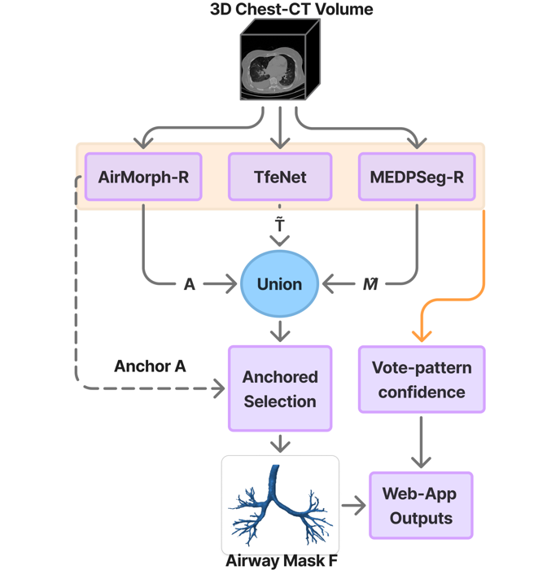
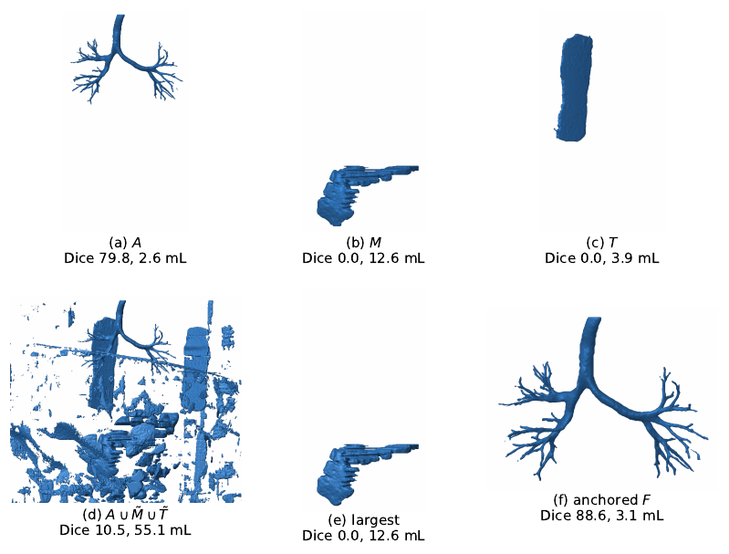
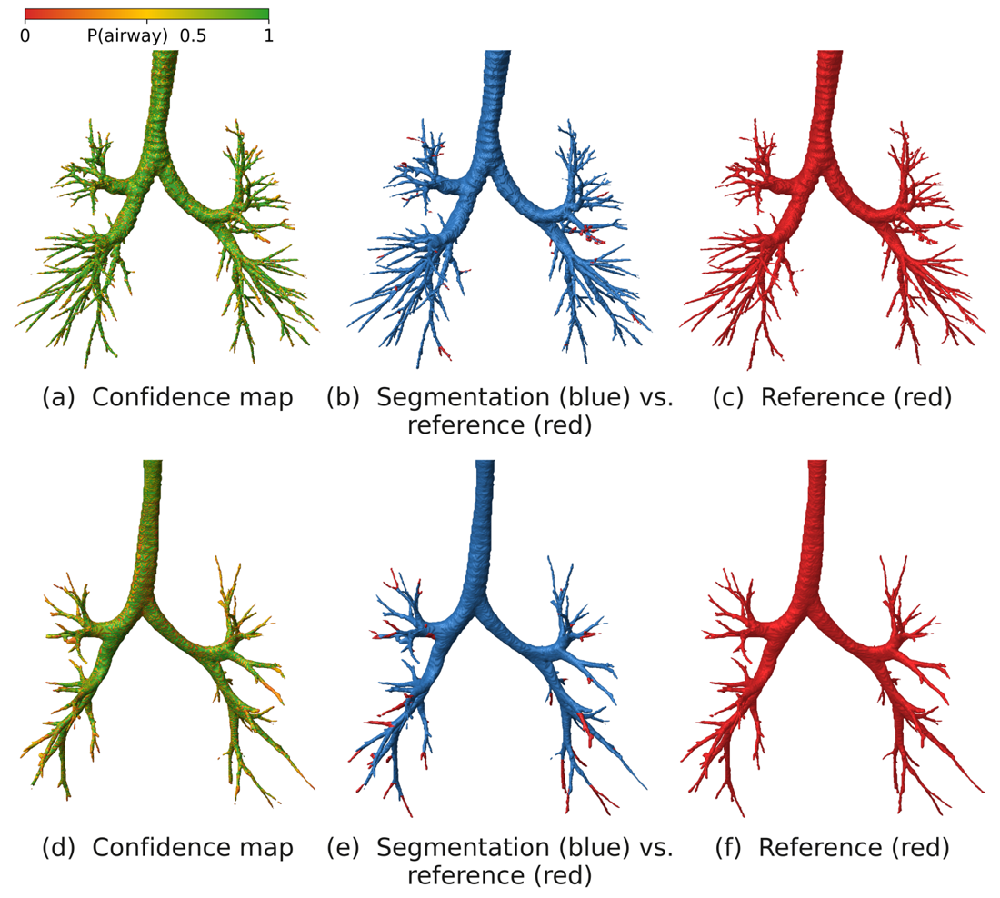

A-Fuse: Anchored Fusion for Automated Airway Segmentation in Pediatric and Adult CT
Middle East Technical University · Boston Children's Hospital, Harvard Medical School
arXiv preprint, October 2026



Abstract
Airway segmentation from chest CT enables branch-level measurement of airway size and growth, but peripheral bronchi remain hard to segment, particularly in children, whose airways are smaller and for whom few annotated scans exist. Different models recover complementary branches of the airway tree. Their union improves overall tree coverage but also introduces disconnected non-airway objects. We propose anchored fusion (A-Fuse), which takes the voxel-wise union of TfeNet, a retrained MEDPSeg and a reimplemented AirMorph and retains the connected component with greatest overlap with the AirMorph mask. On 30 held-out adult CTs from the ATM'26 training set, A-Fuse reaches a Dice score of 93.24% and the highest branch detection rate among compared methods (92.05%). On nine pediatric scans, it reaches 94.15% Dice and 68.79% branch detection. A-Fuse retains the airway tree in all 39 test scans, whereas keeping the largest component selects a non-airway object in four. A-Fuse is deployed as an automated web application and we release all code, trained weights and an open-source ITK-SNAP extension for 3D tubular segmentation editing.
Results
| Scans | Dice | Branch detection | |
|---|---|---|---|
| Adult (ATM'26 held-out) | 30 | 93.24% | 92.05% |
| Pediatric | 9 | 94.15% | 68.79% |
A-Fuse keeps the airway tree in all 39 test scans. Largest-component selection on the same union picks a non-airway object in four of them. No pediatric training data is used. The pediatric set is nine scans from one hospital with normal lungs, so performance in airway disease is untested.
What is in the release
- The fusion rule, AirMorph-R and MEDPSeg-R training code, evaluation scripts and the data split (MIT licence).
- Trained weights in the models-v1 release (CC BY-NC 4.0).
- An open-source ITK-SNAP extension for editing 3D tubular segmentations.
BibTeX
@article{isik2026afuse,
title = {Anchored Fusion for Automated Airway Segmentation in Pediatric and Adult CT},
author = {Isik, Huseyin Umut and Balcik, Ege Mert and Atasoy, Duygu and Sahu, Asutosh and Ertekin, Seyda and Kurugol, Sila},
journal = {arXiv preprint arXiv:2610.40702},
year = {2026},
doi = {10.48550/arXiv.2610.40702}
}